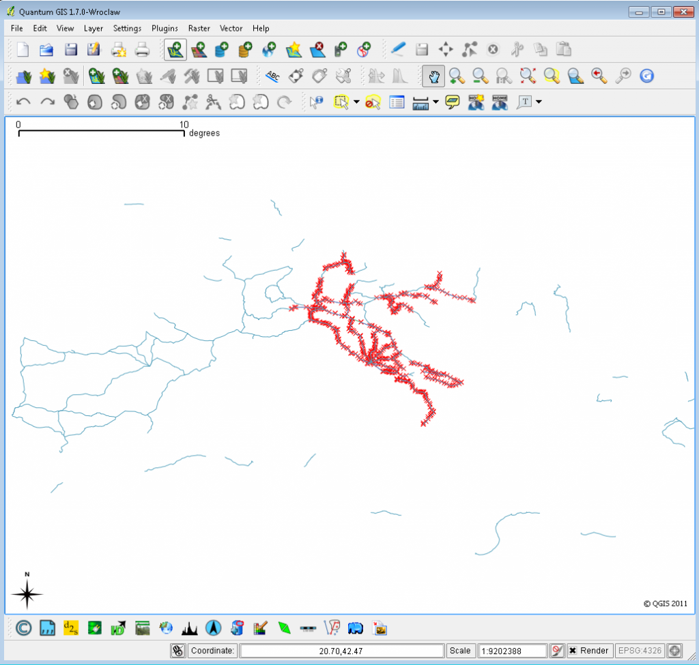
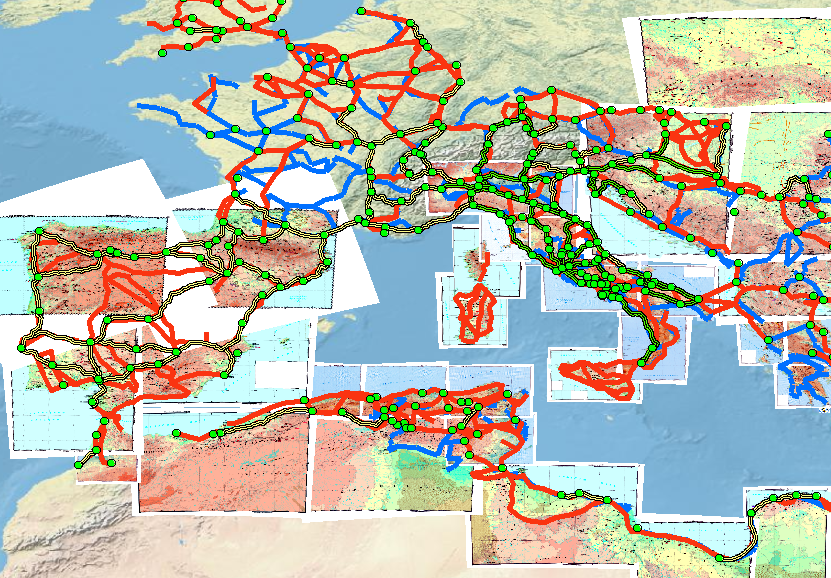
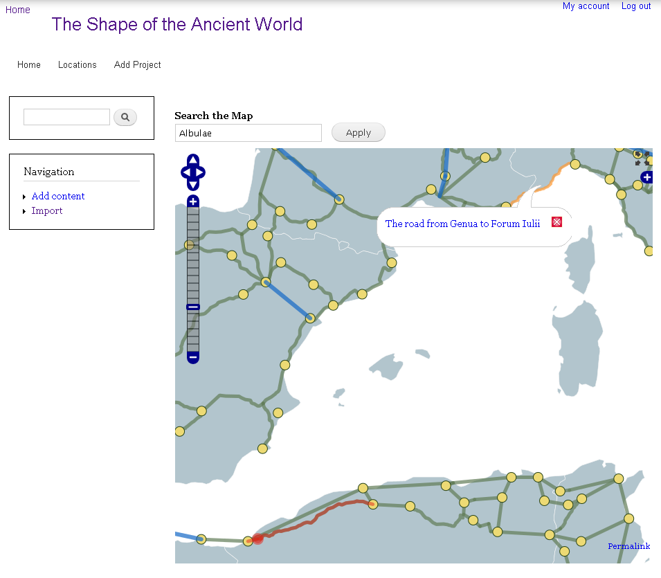

I’ve been working just a bit more with Quantum GIS, the open-source alternative to ESRI’s ArcGIS. At Stanford, we have an unlimited (or practically unlimited, I can never remember) set of licenses for ArcGIS, along with most of the analyst packages that make it particularly useful. As such, I’m not using QGIS for the typical reason (ArcGIS is expensive) or even the other reason (ArcGIS doesn’t run on OSX–though this is hardly a barrier, anymore, given how well OSX emulates Windows). No, I’ve found myself using QGIS because it has the most useful, amazing, simple feature for a person working with spatial data in Drupal: When you edit->copy a feature or set of features, you can edit->paste that set of features into text format and it’s in well-formatted WKT.
And you can drop that WKT right into a Drupal Geofield. Add in the Simplify Features button to keep OpenLayers from pushing too many vertices and some Feeds integration and you end up with a nice pipeline from ArcGIS feature extraction to hosting the results in an OpenLayers-enabled Drupal installation, which takes us from this:


